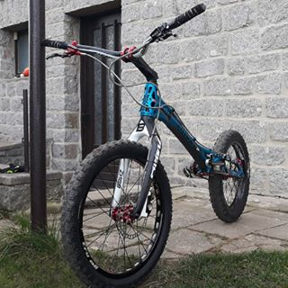

Trial
En esta web aprenderemos más sobre un deporte poco conocido: El trial
De los deportes
MAS EXIGENTES
El trial en España
Ciudad mas trialera Cartagena

Cartagena es una ciudad muy trialera, es decir, en la que este deporte está muy desarrollado.
Cientos de jóvenes y adultos practican este deporte en sus ratos libres como hobbie, puesto que es un deporte que no resulta excesivamente económico y se puede practicar en cualquier lado.
El trial, también es un deporte muy fotogénico, y desde el club, hemos creado una pequeña galería digital para ver este deporte en todo su esplendor. Para verla, pincha aquí <
Características de una bici de trial

Las bicis de trialson bicis muy diferentes a una normal, tanto por fuera como por dentro.
-
Geometría
-
Neumáticos
-
Frenos
-
Postura


Sígueme en mis redes sociales
Instagram: @trial_boyzz
Facebook: @triallboys
Twitter: @loschicosdeltrial
Algunos buenos trialeros
-
Abel Mustieles
-
Benito Ros
-
Sebas Ruiz
-
Raúl Martínez
EQUILIBRIO
Allí encontrarás recomendaciones de algunas buenas bicis de trial, para todo tipo de públicos y bolsillos.